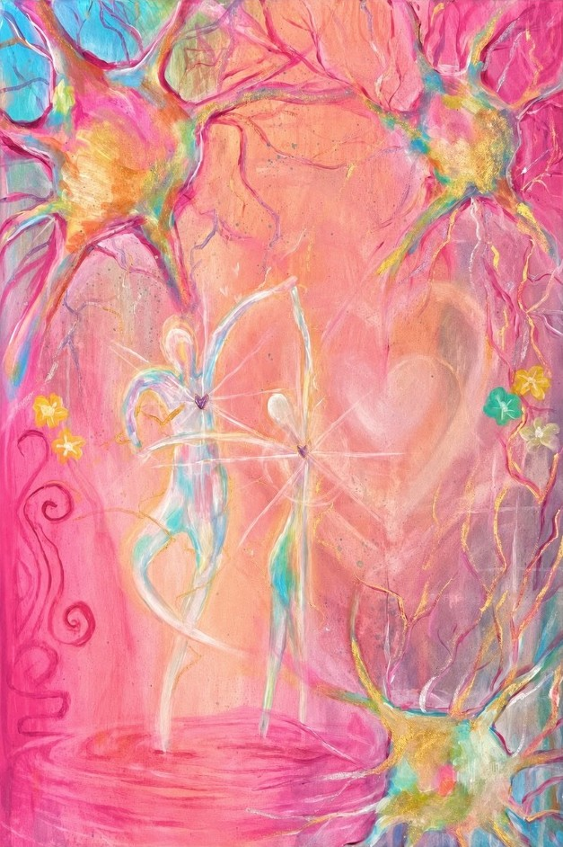
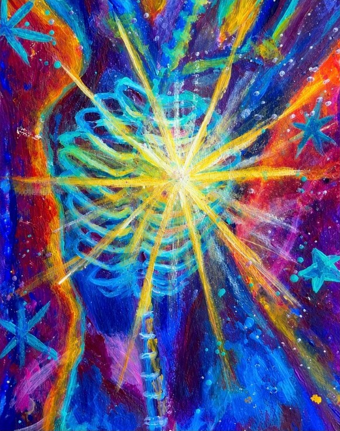
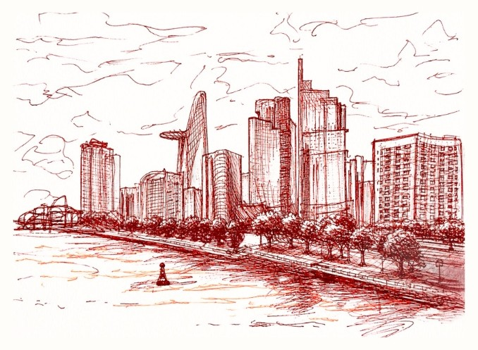

Grade 12 · Trung Vuong High School · Ho Chi Minh City
Hi, I’m Gia Han.
I run art workshops for children in shelters, research how people open up, and build tools and events with friends. Most of it keeps coming back to one question: what makes it easier for people to take part?
Scroll
Six short parts. Each one opens a room with more.
00Who I am
Grade 12, Ho Chi Minh City
I am in Grade 12 at Trung Vuong High School in Ho Chi Minh City. I have been drawing since I was five, and I have been class president for twelve years in a row.
Being class president that long meant twelve years of getting a class to do things together, and that is still the part of any project I enjoy most.
Inside · in my own words, why I make things, then my drawings and CV
Read more about meTrieu Ngoc Gia HanGrade 12
- School
- Trung Vuong High School · Grade 12
- City
- Ho Chi Minh City
- Languages
- Vietnamese, English
- Drawing
- since age five
- At school
- class president, 12 years in a row
The questionWhat makes it easier for people to take part?
01Dream Strokes
Art anyone can join
Creative
I started Dream Strokes in April 2025 because there were few places where anyone could simply come and make art with others, especially without paying for a class. Each session brings the materials, a story to draw into and facilitators, so taking part needs no skill and no equipment of your own. It began in shelters in Ho Chi Minh City and later reached care homes for older adults.
Expressive
Our lesson plans give children another way to say how they see things. In the Magic Mirror, each child draws the person they see in a paper mirror frame: one girl drew herself in a crown, one boy spinning a basketball. When we swapped free drawing for story worlds, the children who had said least changed most. My guess is that a character gave them someone to speak through.
Connection
In the first sessions every child had their own box of crayons and drew mostly alone. The next time, we placed one tray in the middle. Soon hands were crossing the table, and children were deciding together which green belonged to the grass. Sessions now end on one piece the whole table made. Through OPEN, our concerts, football tournaments and exhibition, more than 1,700 people from outside the shelters have joined in.
50 workshops · ~200 children · 6 shelters · 2 care homes
Inside · why I started it, the sessions, OPEN, the team, partners and results
Read the Dream Strokes storyTry it · the same fifteen minutes, two ways
Active participation
60%What the room does
Children work in parallel. Materials stay where they were placed. Most talk goes to the facilitator.
02Research
Two ways to say how you feel
I designed a study with 68 young adults. Each completed two sessions: one working with art materials, one reflecting in a dialogue with AI.
Neither method won. What helped depended partly on how familiar someone already was with art. For some, making something with their hands was an easier place to begin. For others, conversation was.
At TeenCare, a startup building tools for teenagers, I proposed something in the same spirit: letting people meet psychology through a story they can step into.
Inside · the study and its findings, and two startup roles
See the method and findingsThe lines cross: which format lifted mood more depended on prior art experience.
03Together!
Keeping the days we missed
Dream Strokes members live in six cities and provinces, so most of them never saw what the others did: the photograph taken while packing supplies, the voice note on the way home.
With members of the team I built Together!, a shared diary where everyone leaves writing, photographs and voice notes on one timeline. Dream Strokes and more than 20 other projects now keep theirs on it.
Inside · the design problem, the decisions, and Contextuary
Explore Together!Together!Shared diary · co-founder · UI/UX design
04Events
Ten bands, one stage
I produced Beats of Hope, a benefit concert where more than ten student bands played for over 300 people. It raised about 25 million VND for play and storytelling sessions with children in hospital. I have also run a school football league, a water-rocket contest and a science festival.
What I remember most from that night is a moment near the start: one person moved closer to the stage, and then the people around them followed.
Inside · Beats of Hope and the other events
See the eventsCharity concert · 2025
Beats of Hope
Admit one · stand closer to the stage
10+ bands
300+ attendees
25M VND raised
05Art
What I paint
Painting is the part I do for myself. Lately it has been three things: what happens between people, what I carry inside, and my city.

Chemistry Acrylic on canvas, 2026
Stardust Acrylic on watercolor paper, 2026
Ba Son’s view Red ink on paper, 2025
Inside · eight works, my notes on each, and a screening room
Enter the exhibition06Still curious
The question I am still following
A tray in the middle, a format that fits the person, a diary everyone can see, one person moving closer to the stage. Each made taking part a little easier for someone, in its own way.
- A shelter dining hall01 Dream Strokes · Creative
- A research session02 Research · Expressive
- A shared timeline03 Together! · Connection
- A concert floor04 Events · Gathering
Why does one person lean in while another stays near the edge? What makes an experience begin to feel like theirs too? How much can change when we move one tray, rewrite one prompt or give a memory somewhere to return?
+More work
More work
-
Contextuary
A vocabulary tool that explains a word inside the sentence that gives it meaning.
~2,200 visitors · 500+ registered users
View Contextuary → -
TeenCare
Tools that invite teenagers to explore what they feel. I proposed using stories and scenarios, so the psychology connects to their own lives.
Research associate · 100+ interviews
Read more → -
Little Smiles Project
Creative direction for play and storytelling sessions with children in three hospitals.
Creative Director
Read more → -
Awards
International Psychology Olympiad, Silver Award, 1st in Asia. IMOCSEA, Gold Medal. RAIS Essay Competition, Top 2 of about 450.
8 honours, 2023 to 2026
See all awards →